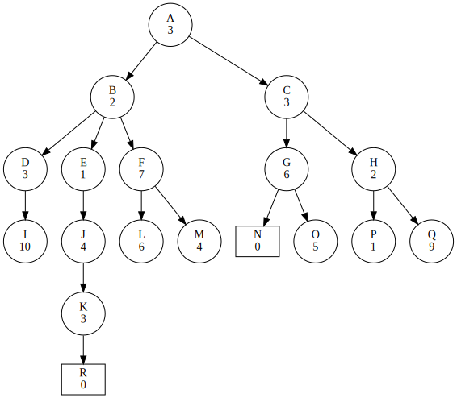
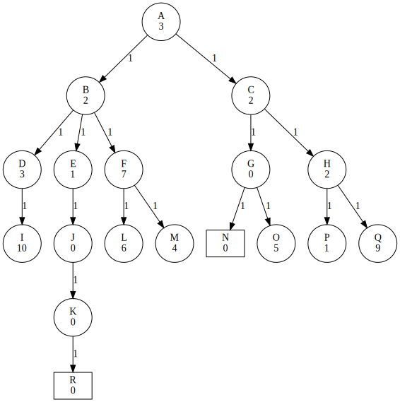

A Star Search Introduction
Jacky Baltes
National Taiwan Normal University
Taipei, Taiwan
jacky.baltes@ntnu.edu.tw

AI and Search - Recap
- Search is the common component of many AI problems (e.g., planning, logistic problems, job shop scheduling, computer vision, machine learning, logic programming, navigation, ...)
- Uninformed search (DFS, BFS, IDDFS, ...) as basic engines for search
- Heuristic functions as a general method to guide the search, to incorporate many different types of domain knowledge
- Best First Search as a first algorithm to exploit this knowledge
Best First Search
- Expand all children of the current node
- Sort the queue of open nodes based on the heuristic value of each node
- Select the node with the best heuristic in the entire queue to expand next
- Select the node with the best heuristic value in the set of children only, then we are implementing a hill climbing algorithm
- Follows the best estimated path, until it becomes not promising anymore.
- This is also called greedy search
Best First Search
- The heuristic value of a node is only an estimate
- So it may mislead the search. Select a node with a better heuristic value from some other part of the tree
- No guarantee that we will find the optimal solution
- If we have two nodes with the same heuristic value, then we may pick the lower node
- Would like to prefer nodes in the higher parts of the tree, since it will be less work to get to the solution then
Best First Search
- The heuristic value of a node is only an estimate
- So it may mislead the search. Select a node with a better heuristic value from some other part of the tree
- No guarantee that we will find the optimal solution
- If we have two nodes with the same heuristic value, then we may pick the lower node
- Would like to prefer nodes in the higher parts of the tree, since it will be less work to get to the solution then
Sample Tree
- A->B->E->C->H->P->D->J->K->R (Solution)
- Miss the higher up solution of N
- Change the heuristic function to also include the cost from the root to the current node
- Heuristic is an estimate of the distance from the current node to a goal node (solution)
- The cost from the root to the current node is known (not an estimate)
- Cost can be defined as
- The level in the tree (How many actions)
- The distance I had to drive to reach that node
- ...
Two Part Heuristic
f(n) = g(n) + h(n)- g(n): actual cost from the root to node n
- h(n): estimate of the cost from node n to a solution
- Search is guided by the sum of g(n) and h(n)
Trace of Two Heuristic Search (Algorithm A)
Empty [A(0+3)]
A [ B(1+2) C(1+3)]
B [ E(2+1) C(1+3) D(2+3) F(2+7) ]
E [ C(1+3) D(2+3) J(3+4) F(2+7) ]
C [ H(2+2) D(2+3) J(3+4) G(2+6) F(2+7) ]
H [ P(3+1) D(2+3) J(3+4) G(2+6) F(2+7) Q(3+9) ]
P [ D(2+3) J(3+4) G(2+6) F(2+7) Q(3+9) ]
D [ J(3+4) G(2+6) F(2+7) Q(3+9) I(3+10) ]
J [ K(4+3) G(2+6) F(2+7) Q(3+9) I(3+10) ]
K [ R(5+0) G(2+6) F(2+7) Q(3+9) I(3+10) ]
R Solution
Admissible Heuristic
- An admissible heuristic is defined as a heuristic function that always underestimates or is equal to the distance from the node to the goal
- Examples
- Straight line distance is an admissible heuristic for navigation domains
- Number of boat crossings must be less than (2n+1) for n people still need to be moved (Jealous Husband domain)
A* Search
- Apply two part heuristic (cost + heuristic estimate) to a problem (also called algorithm A)
- with an admissible heuristic
- This algorithm is called A*
- A* algorithm is guaranteed to find the optimal solution
Example of A* Algorithm

Empty [A(0+3)]
A [ B(1+2) C(1+2)]
B [ E(2+1) C(1+3) D(2+3) F(2+7) ]
E [ J(3+0) C(1+3) D(2+3) F(2+7) ]
J [ C(1+3) K(4+0) D(2+3) F(2+7) ]
C [ G(2+0) K(4+0) H(2+2) D(2+3) F(2+7) ]
G [ N(3+0) K(4+0) H(2+2) D(2+3) O(3+5) F(2+7) ]
N Solution
Informal Proof of A* Search
- As we expand the search space, we do more moves
- Cost of a node, more and more will be contributed by the actual cost rather than the heuristic estimate
- With an admissible heuristic, the cost of nodes along a path can only go up, never down
- Estimates will become more and more accurate
- If the heuristic value can also be an overestimate, that means that the cost of a node could suddenly drop as we expand a path
- But that is impossible for an admissible heuristic
Efficiency of Heuristics
- If the error of an admissible heuristic is bounded by a constant, then the search will require only a linear amount of time in the depth of the search
- So instead of the runtime of the search being b**d, the runtime of the search is only C*d
b = 12
d = 15
leaves = b**d
print(f'Exponential complexity: {b}**{d}=={leaves/1e12} trillion')
C = leaves/d
print(f'Linear complexity: {C}*{d}=={C*d/1e12} trillion')
speedup = 1e6
print( f"Now assume that we get a computer that is {speedup} faster")
print( f"What size of problem can we solve now?")
cd = speedup
print( f"Linear complexity: the new {speedup} faster computer can solve problems of size {d*speedup}")
for d1 in range(15,25):
if b**d1/speedup >= leaves:
nd = d1
break
print( f"Exponential complexity: The new {speedup} computer can solve problems of size {nd-1}")
Exponential complexity: 12**15==15407.021574586368 trillion Linear complexity: 1027134771639091.2*15==15407.021574586368 trillion Now assume that we get a computer that is 1000000.0 faster What size of problem can we solve now? Linear complexity: the new 1000000.0 faster computer can solve problems of size 15000000.0 Exponential complexity: The new 1000000.0 computer can solve problems of size 20